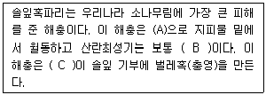

식물보호산업기사 (2020-08-22 기출문제)
1과목: 식물병리학
1. 병원체의 감염, 침입 등의 자극에 의하여 식물체가 파이토알렉신, PR protein 등을 만들어 저항성을 나타내는 것은?
- 물리적 저항성
- 정적 화학적 저항성
- 분주감수성
- 유도저항성
(정답률: 75%)

2. 주변에 향나무가 많은 경우 배나무에 주로 발생하는 병은?
- 겹무늬병
- 흰가루병
- 검은무늬병
- 붉은별무늬병
(정답률: 86%)
3. 기주에서 기생생활을 원칙으로 하나 조건에 따라 죽은 기주에서 부생적으로 생활할 수 있는 것은?
- 임의기생체
- 순활물기생체
- 임의부생체
- 부생체
(정답률: 77%)
4. 매개층의 알을 통하여 다음 대까지 바이러스가 옮겨지는 병은?
- 벼 오갈병
- 감자 잎말림병
- 오이 모자이크병
- 오이 녹반모자이크병
(정답률: 71%)
5. 사과나무 부란병을 일으키는 병원체는?
- 세균
- 진균
- 바이러스
- 파이토플라스마
(정답률: 65%)
6. 다음 중 비기생성 성질의 병은?
- 배추 무름병
- 사과나무 검은별무늬병
- 토마토 배꼽썩음병
- 담배 불마름병
(정답률: 78%)
7. 다음 중 법적 방제법에 해당하는 것은?
- 포장위생
- 식물검역
- 종묘소독
- 비배관리
(정답률: 87%)
8. 균류유사체에 속하는 병원균에 의해 산성토양에서 많이 발생하는 병해는?
- 배추 무름병
- 토마토 풋마름병
- 배추 무사마귀병
- 대추나무 빗자루병
(정답률: 73%)
9. 감염되면 식물체의 모든 부위에 병징이 나타나는 병은?
- 벼 깨씨무늬병
- 사과 탄저병
- 담배 모자이크병
- 인삼 점무늬병
(정답률: 70%)
10. 다음 중 병원체가 기주식물이 없어도 오랫동안 전염원으로서 생존이 가능하며 기주식물을 연작할 경우 그 피해가 증대해 방제하기가 가장 어려운 병해는?
- 종자 전염성 병해
- 공기 전염성 병해
- 토양 전염성 병해
- 충매 전염성 병해
(정답률: 84%)
11. 병원체가 기주를 침해하여 병을 일으킬 수 있는 능력을 무엇이라 하는가?
- 기생성
- 감수성
- 병원성
- 저항성
(정답률: 78%)
12. 벚나무 빗자루병을 일으키는 병원체는 어디에 속하는가?
- 세균
- 진균
- 바이러스
- 파이토플라스마
(정답률: 56%)
13. 병 진단법에 대한 설명으로 틀린 것은?
- 바이로이드병의 진단에는 지표식물은 이용되지 못한다.
- 바이로이드 진단에는 RNA 전기영동법이 이용된다.
- 감자의 바이러스 감염은 괴경지표법으로 검정할 수 있다.
- 사과나무 자주날개무늬병은 고구마를 심어 검정한다.
(정답률: 66%)
14. 다음 중 병원체가 가지고 있는 플라스미드의 T-DNA 부분이 식물 세포로 이행하여 뿌리 혹병을 일으키는 것은?
- Agrobacterium tumefaciens
- Xathomonas campestris
- Streptomyces scabies
- Pseudomonas putida
(정답률: 71%)
15. 다음 중 물에 의해 전파되는 병으로 가장 옳은 것은?
- 벼 흰잎마름병
- 밀 줄기녹병
- 밀 붉은녹병
- 보리 속깜부기병
(정답률: 73%)
16. 다음 중 비전염성인 병은?
- 선충에 의한 병
- 영양결핍에 의한 병
- 세균에 의한 병
- 바이러스에 의한 병
(정답률: 88%)
17. 식물에 병원균이 침해되어도 전혀 병 발생이 없는 것은?
- 저항성
- 면역성
- 감수성
- 내병성
(정답률: 80%)
18. 바이러스병의 진단법으로 가장 거리가 먼 것은?
- 효소결합항체법
- 봉입체 관찰
- 지방산 분석
- 한천겔확산법
(정답률: 63%)
19. 감자 잎말림병을 일으키는 병원체는?
- 세균
- 진균
- 선충
- 바이러스
(정답률: 50%)
20. 발병에 영향을 주는 세 가지 요인에 속하지 않는 것은?
- 병원체
- 감수성식물
- 환경
- 시간
(정답률: 84%)
2과목: 농림해충학
21. 곤충의 전장에 대한 설명으로 옳지 않은 것은?
- 양분을 흡수한다.
- 외배엽에 의하여 생긴다.
- 분문판으로 중장과 구분된다.
- 먹은 것을 분쇄하는 장치를 가진 것이 있다.
(정답률: 59%)
22. 생물적 방제를 위하여 해충의 천적을 이용하는 방법으로 옳지 않은 것은?
- 외국으로부터 도입 이용
- 대량 증식 방사
- 내충성 증대
- 환경조건의 개선
(정답률: 53%)
23. 천공성 해충으로서 피해구멍에 배설물을 실로 칠하여 덮어 놓으므로 혹같이 보이는 해충은?
- 혹명나방
- 솔나방
- 독나방
- 박쥐나방
(정답률: 53%)
24. 농생태계와 비교하여 산림생태계의 특성에 대한 설명으로 가장 거리가 먼 것은?
- 군집구조가 복잡하다.
- 안정된 생태계이다.
- 생물 종의 구성이 단순하다.
- 자연적인 생태계이다.
(정답률: 76%)
25. 벼해충 중 대표적인 비래해충은?
- 이화명나방
- 벼멸구
- 끝동매미충
- 번개매미충
(정답률: 74%)
26. 곤충에서 수컷 생식계의 3대 구성요소로 가장 거리가 먼 것은?
- 정소
- 수란관
- 수정관
- 사정관
(정답률: 66%)
27. 곤충의 발육단계에서 빛의 영향을 가장 받지 않는 것은?
- 수명
- 교미
- 휴면
- 산란의 시점
(정답률: 63%)
28. ( )에 가장 알맞은 내용은?

- A : 유충, B : 6월 상순 ~ 중순, C : 유충
- A : 용(번데기), B : 5월, C : 성충
- A : 유충, B : 7월 하순, C : 성충
- A : 용(번데기), B : 8월 상순 ~ 중순, C : 유충
(정답률: 63%)
29. 메뚜기의 경우 앞날개가 뒷날개를 보호하고 비행 시 펼치기만 할 뿐 비행에 활용하지 않는다. 이런 날개를 무엇이라 하는가?
- 굳은 날개
- 인편
- 두텁 날개
- 평군곤
(정답률: 61%)
30. 페로몬에 대한 설명으로 옳은 것은?
- 체내의 생리조절 물질이다.
- 같은 종내 개체간의 통신물질이다.
- 다른 종간의 통신물질이며 전달 방법이 생산자에게 유리하다.
- 다른 종간의 통신물질이며 전달 방법이 수신자에게 유리하다.
(정답률: 74%)
31. 솔나방의 학명으로 옳은 것은?
- Agelastica coerulea
- Thecodiplosis japonensis
- Malacosama neustria
- Dendrolimus spectabilis
(정답률: 44%)
32. 소나무 재선충을 매개하는 해충은?
- 솔잎혹파리
- 솔수염하늘소
- 미국흰불나방
- 버즘나무방패벌레
(정답률: 71%)
33. 다음 중 사과나무 재배 시 경제적으로 가장 큰 피해를 주는 해충은?
- 사과굴나방
- 사과무늬잎말이나방
- 복숭아심식나방
- 조팝나무진딧물
(정답률: 62%)
34. 곤충강에서 분화가 다양하고, 세계적으로 종수가 가장 많은 목은?
- 벌목
- 나비목
- 노린재목
- 딱정벌레목
(정답률: 75%)
35. 다음 중 하루살이가 속한 분류군은?
- 고시류
- 외시류
- 내시류
- 무시류
(정답률: 63%)
36. 곤충의 혈구 중 부정형혈구, 편도혈구 및 판막혈구의 공통적인 기능은?
- 산소운반
- 식균작용
- 혈액응고
- 단백질운반
(정답률: 56%)
37. 수정낭에 대한 설명으로 옳은 것은?
- 수컷에서 만들어진 정자를 임시로 보관하는 곳
- 교미 후 수컷에서 받은 정자를 보관하는 곳
- 수컷의 생식기관으로 정충을 만드는 곳
- 교미 후 정자와의 수정이 일어나는 곳
(정답률: 63%)
38. 곤충학의 발달과 직접적인 관련이 없는 것은?
- 농업혁명
- 벌굴의 채취
- 살충제 발명
- 환경호르몬
(정답률: 62%)
39. 일부지역에만 한정되어 분포하는 종을 일컫는 용어는?
- 멸종위기종
- 범존종
- 고유종
- 외래종
(정답률: 77%)
40. 벌목 곤충에 있어서 앞날개의 경화된 접힌 부위에 결합하는 뒷날개의 기관은?
- 날개추부
- 날개가시
- 날개갈고리
- 평균곤
(정답률: 60%)
3과목: 농약학
41. 수화제 제형 제조에서 중요하게 관리해야할 물리적 특성에 해당하는 것은?
- 비중과 유화성
- 입자의 크기와 현수성
- 안전성과 확전성
- 입자의 크기와 수용성
(정답률: 64%)
42. 분제의 약효에 영향을 미치는 물리적 성질이 아닌 것은?
- 토분성
- 부착성
- 분산성
- 습전성
(정답률: 57%)
43. 농약 살포 중 중독 사고를 방지하기 위한 방법으로 틀린 것은?
- 농약 살포 시 노출부가 적은 방제복을 사용한다.
- 마스크, 방호안경, 보호크림 등을 사용한다.
- 살포 시에는 바람을 마주보며 살포한다.
- 작업이 끝나면 몸을 깨긋이 씻고 휴식을 취한다.
(정답률: 81%)
44. 벼의 도북경감을 위해 주로 사용되는 살균제는?
- Daminozide
- Calcium carbonate
- Hexaconazole
- Ethephon
(정답률: 51%)
45. 다음 중 실험동물(rat)에 경구독성이 가장 강한 것은?
- EPN
- Diazinon
- Dichlorvos
- Fenitrothion
(정답률: 65%)
46. 농약합성 및 제제 시 사용하는 가성소다(NaOH)에 대한 설명으로 틀린 것은?
- 불연성이다.
- 무색 또는 회색의 액체로 취기가 있다.
- 수용액은 인화성이나 폭발성이 없다.
- 피부에 접촉하면 침식시키고 눈에 들어가면 점막을 격렬히 자극하므로 세척해야 한다.
(정답률: 60%)
47. 포자의 침입 및 발아를 저지하고 균사의 생육을 저해하여 병반의 확대, 진전을 억제하는 효과가 있으므로 예방과 치료효과를 동시에 발휘하는 생합성 저해제 농약은?
- Polyoxin B
- Captan
- Cypermethrin
- Simazine
(정답률: 54%)
48. Methidathion 40% 유제를 0.08%액으로 8말을 조제하여 해충을 방제하기 위해 살포하고자 한다. 이때 필요한 Methidathion 40% 유제의 소요량(mL)은? (단, 1말은 20L로 가정한다.)
- 100
- 160
- 200
- 320
(정답률: 44%)
49. 살균제의 분류방법 중 살균기작에 의해 분류한 것은?
- 보호살균제, 직접살균제
- 호흡저해제, 생합성저해제
- 구리제, 유기비소제
- 경엽살포제, 토양소독제
(정답률: 54%)
50. 농약관리법령상 고체 농약의 급성경구 고독성에 해당하는 반수치사량(mg/kg)의 범위는?
- 20 미만
- 5 이상 50 미만
- 10 이상 100 미만
- 20 이상 200 미만
(정답률: 69%)
51. Carbamate 계 살충제가 아닌 것은?
- Carbaryl
- BPMC
- MIPC
- DDVP
(정답률: 62%)
52. DEP제(trichlorfon)가 분해하여 1차로 변하는 형태는?
- Parathion
- DDVP
- Trithion
- Dimethoate
(정답률: 65%)
53. 갯지렁이의 독소 물질인 nereistoxin의 구조를 변형하여 만든 살충제는?
- Bensultap
- Edifenphos
- Dicofol
- Fenobucarb
(정답률: 50%)
54. 농약의 독성표시를 가장 바르게 나타낸 것은?
- ED95(mg/kg)
- LD90(mg/kg)
- ED50(mg/kg)
- LD50(mg/kg)
(정답률: 77%)
55. 합성 pyrethroid계 살충제의 살충작용의 기전을 가장 바르게 설명한 것은?
- 중추신경계나 말초신경계에 대하여 낮은 농도에서 독성작용을 나타낸다.
- 콜린에스테라제의 활성저해로 인한 아세틸콜린 축적으로 신경전달을 중단한다.
- 세포분열 저해 및 단백질 합성저해에 의하여 독작용을 나타낸다.
- 곤충제 내의 SH기나 nitro기 등과 결합하여 그 기능을 저해한다.
(정답률: 46%)
56. 40%(비중=1)의 어떤 유제가 있다. 이 유제를 1000배로 희석하여 9L를 살포하고자 할 때, 유제의 소요량(mL)은?
- 7
- 8
- 9
- 10
(정답률: 68%)
57. 농약의 작물잔류성에 미치는 요인으로 가장 거리가 먼 것은?
- 농약의 이화학적 특성
- 작물의 형태
- 농약의 색상
- 환경조건
(정답률: 74%)
58. 입자의 크기가 가장 작은 농약의 제형은?
- 분제
- 수화제
- 입제
- 미립제
(정답률: 45%)
59. 농약의 분류 중 유효성분 조성에 따른 분류는?
- 기피제
- 침투성제
- 유기염소계
- 불임화제
(정답률: 73%)
60. 희석하지 않고 직접 살포하는 제형은?
- 유제
- 액상수화제
- 수용제
- 미립제
(정답률: 61%)
4과목: 잡초방제학
61. 밭잡초의 발생 특성에 해당되지 않는 것은?
- 발생초종이 다양하고 발생량이 많다.
- 우점잡초는 바랭이, 뚝새풀, 명아주 등이다.
- 수도작보다 밭작물에서 잡초의 피해가 적다.
- 수생잡초보다는 습생 및 건생잡초가 많다.
(정답률: 69%)
62. 제초제 저항성 잡초의 출현을 감소시킬수 있는 방법으로 가장 옳은 것은?
- 동일한 제초제를 매년 사용하여, 5년 주기로 변경하여 사용한다.
- 동일한 작물을 연작한다.
- 약효가 좋은 동일계열 제초제를 매년 사용한다.
- 작용기작이 다른 제초제를 번갈아 사용한다.
(정답률: 76%)
63. 농경지에서 잡초를 방제하지 않을 때 나타나는 손실과 관계가 없는 것은?
- 작물의 수량 감소
- 농산물의 품질 저하
- 병, 해충의 발생 증가
- 토질개선
(정답률: 76%)
64. 영양번식의 환경요인에 대한 설명으로 틀린 것은?
- 증점토보다 사양토에서 지하 영양기관의 생성이 배가 된다.
- 단일조건은 매자기의 괴경 형성은 촉진하며 자일조건에서는 괴경당 중량을 크게 한다.
- 광도는 건물생산과 생리대사에 영향을 미친다.
- 무기성분 함량이 충분한 조건하에서 다년생 잡초의 경우 영양번식 속도가 억제된다.
(정답률: 63%)
65. 다음 중 종피에 기인한 휴면과 가장 거리가 먼 것은?
- 배의 미숙
- 배의 생장에 대한 기계적 장해
- 가스교환 빙해
- 투수성 방해
(정답률: 50%)
66. 다음 중 화본과 잡초에는 있으나 광엽잡초에는 없는 주요 기관은?
- 줄기
- 마디
- 엽신
- 엽초
(정답률: 47%)
67. 다음 중 선택성 제초제는?
- Paraquat
- Glyphosate
- 2,4-D
- Glufosinate
(정답률: 73%)
68. 논에 오리를 방사하여 잡초를 방제하는 방법은?
- 경종적 방제법
- 생물적 방제법
- 화학적 방제법
- 기계적 방제법
(정답률: 77%)
69. 다음 중 영양번식기관과 해당 잡초가 옳지 않게 연결된 것은?
- 지하경 – 가래, 수염가래꽃
- 인경 – 야생마늘, 자주괭이밥
- 괴경 – 향부자, 매자기
- 포복경 – 올미, 벗풀
(정답률: 59%)
70. 우리나라 논에서 발생하는 주요 다년생 광엽잡초는?
- 여뀌, 마디꽃
- 사마귀풀, 논뚝외풀
- 물달개비, 가래
- 올미, 벗풀
(정답률: 52%)
71. 발생지에 따른 분류와 해당 잡초종이 잘못 연결된 것은?
- 논 잡초 – 강피, 올챙이고랭이
- 밭 잡초 – 개비름, 깨풀
- 과수원 잡초 – 쑥, 민들레
- 잔디밭 잡초 – 쇠털골, 가래
(정답률: 62%)
72. 논에 발생하는 피류의 속명은?
- Cyperus
- Echinochloa
- Sorghum
- Monochoria
(정답률: 46%)
73. 종자에 낙하산과 같은 깃털을 가지거나 솜털과 같은 것으로 덮여서 바람에 잘 날리는 잡초는?
- 민들레
- 쇠비름
- 물달개비
- 피
(정답률: 78%)
74. 다음 잡초 중 기주식물에서 기생하는 잡초는?
- 피
- 물달개비
- 명아주
- 새삼
(정답률: 65%)
75. 밭잡초의 효과적 방제를 위한 다양한 특성을 고려해야 할 때에 대한 설명으로 틀린 것은?
- 밭작물은 종류가 많고 재배시기가 다양하다.
- 재배지의 토성, 수분, 유기물 함량 등이 다양하다.
- 중경, 배토에 의해 효과적인 방제가 가능하다.
- 밭잡초는 종류가 다양하나 발생이 균일하여 발생 예측이 가능하다.
(정답률: 73%)
76. 제초제의 흡수에 대한 설명으로 옳지 않은 것은?
- 종자 내로 제초제의 침투는 집단류와 확산에 의해 일어난다.
- 식물의 뿌리는 토양으로부터 토양에 잔류하는 제초제를 흡수한다.
- 제초제의 식물뿌리 내 물관으로의 이동 중 원형질막을 통과하는 경로는 심플라스트 경로를 이용한다.
- 비극성제초제는 극성 제초제보다 잡초의 뿌리 흡수가 용이하다.
(정답률: 64%)
77. 다음 중 다년생 논잡초이며, 지하 번식체를 0~5cm의 표토에 주로 생성하는 것은?
- 바랭이
- 개망초
- 올미
- 금방동사니
(정답률: 57%)
78. 잡초의 형태적 특성에 따른 분류로 옳은 것은?
- 화본과 잡초, 광엽잡초, 사초과 잡초
- 1년생잡초, 2년생잡초, 다년생잡초
- 수생잡초, 습생잡초, 건생잡초
- 지상식물, 반지중식물, 지중식물
(정답률: 70%)
79. 잡초종자의 발아에 관여하는 환경요인과 가장 관계가 적은 것은?
- 광
- 토성
- 산소
- 온도
(정답률: 47%)
80. 우리나라에서 발생하고 있는 대부분의 잡초종자 바랑 최적온도 범위로 가장 옳은 것은?
- 0~5℃
- 7~12℃
- 15~30℃
- 32~44℃
(정답률: 74%)